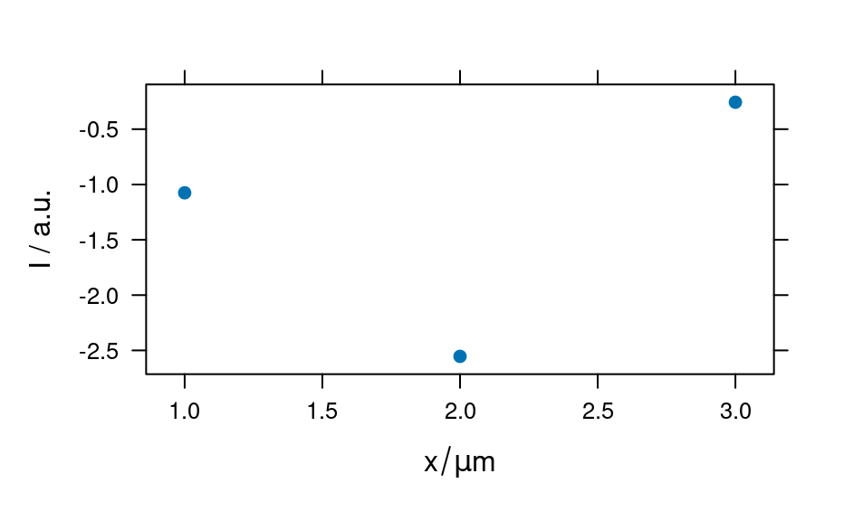

To create a new hyperSpec object, the following functions can be used:
new() (i.e., new("hyperSpec", ...));
new_hyperSpec().
new_hyperSpec(
spc = NULL,
data = NULL,
wavelength = NULL,
labels = NULL,
gc = hy_get_option("gc")
)
# S4 method for hyperSpec
initialize(
.Object,
spc = NULL,
data = NULL,
wavelength = NULL,
labels = NULL,
gc = hy_get_option("gc")
)(matrix or convertible to matrix)
A spectra matrix with spectra in rows and wavelength intensities in
columns.
The spc does not need to be an R matrix, but must be an object
convertible to a matrix via I(as.matrix(spc)).
(data.frame)
A data.frame with extra (non-spectroscopic) data in columns.
The data frame may also contain a special column spc with a matrix
of spectroscopic data.
(Such single column that contains matrix can be created with
data.frame(spc = I(as.matrix(spc))).
However, it will usually be more convenient if the spectra are given
via argument spc.)
(numeric vector)
The wavelengths corresponding to the columns of spc.
If no wavelengths are given, an appropriate vector is derived from the
column the column names of data$spc. If this is not possible,
1:ncol(data$spc) is used instead.
A named list:
list's element names should containing one or more names of data
columns as well as special name .wavelength for wavelengths ).
list's element values should contain the labels for the indicated
names usually either in a for of character strings or
plotmath expressions.
(The labels should be given in a form ready
for the text-drawing functions, see grDevices::plotmath()).
If label is not given, a list containing NULL for each of the
columns of data and wavelength is used.
(logical)
Use garbage collection.
If option gc is TRUE, the initialization will have frequent calls
to base::gc(), which can help to avoid swapping or running out of
memory. The default value of gc can be set via hy_set_options().
A new hyperSpec object.
A hyperSpec object is an S4 object, so its initialization is carried out
by calling new("hyperSpec", ...). Function new_hyperSpec() is just
a convenience function.
methods::new() for more information on creating and initializing S4 objects.
grDevices::plotmath() on expressions for math annotations as for slot label.
hy_set_options() setting hyperSpec options.
new("hyperSpec")
#> hyperSpec object
#> 0 spectra
#> 1 data columns
#> 0 data points / spectrum
new_hyperSpec()
#> hyperSpec object
#> 0 spectra
#> 1 data columns
#> 0 data points / spectrum
spc <- matrix(rnorm(12), ncol = 4)
new("hyperSpec", spc = spc)
#> hyperSpec object
#> 3 spectra
#> 1 data columns
#> 4 data points / spectrum
new_hyperSpec(spc = spc)
#> hyperSpec object
#> 3 spectra
#> 1 data columns
#> 4 data points / spectrum
new("hyperSpec",
data = data.frame(x = letters[1:3]),
spc = spc
)
#> hyperSpec object
#> 3 spectra
#> 2 data columns
#> 4 data points / spectrum
colnames(spc) <- 600:603
new("hyperSpec", spc = spc) # wavelength taken from colnames (spc)
#> hyperSpec object
#> 3 spectra
#> 1 data columns
#> 4 data points / spectrum
# given wavelengths precede over colnames of spc
new("hyperSpec", spc = spc, wavelength = 700:703)
#> hyperSpec object
#> 3 spectra
#> 1 data columns
#> 4 data points / spectrum
# specifying labels
h <- new("hyperSpec",
spc = spc, data = data.frame(pos = 1:3),
label = list(
spc = "I / a.u.",
.wavelength = expression(tilde(nu) / cm^-1),
pos = expression("/"(x, mu * m))
)
)
plot(h)
plotc(h, spc ~ pos)
#> Warning: Intensity at first wavelengh only is used.
